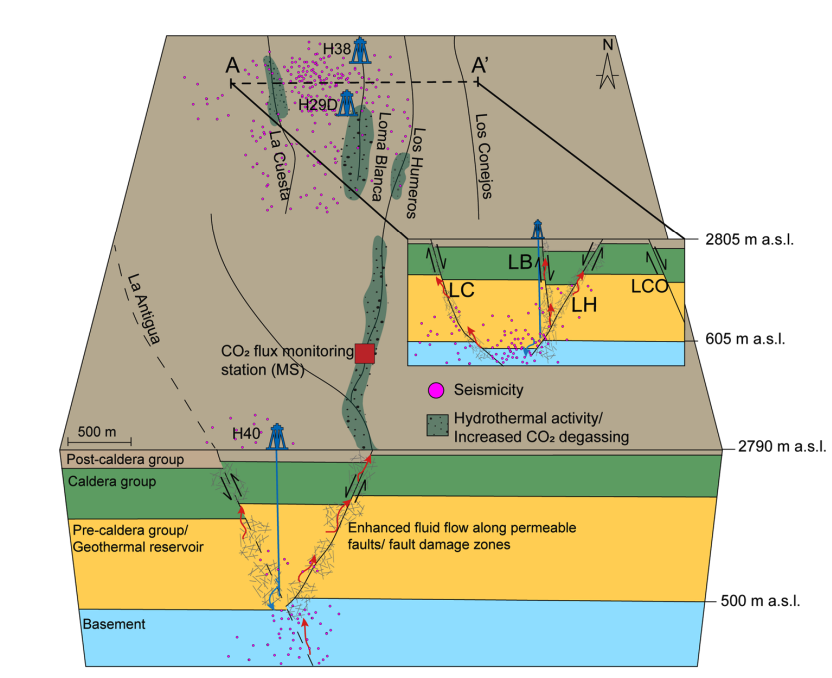
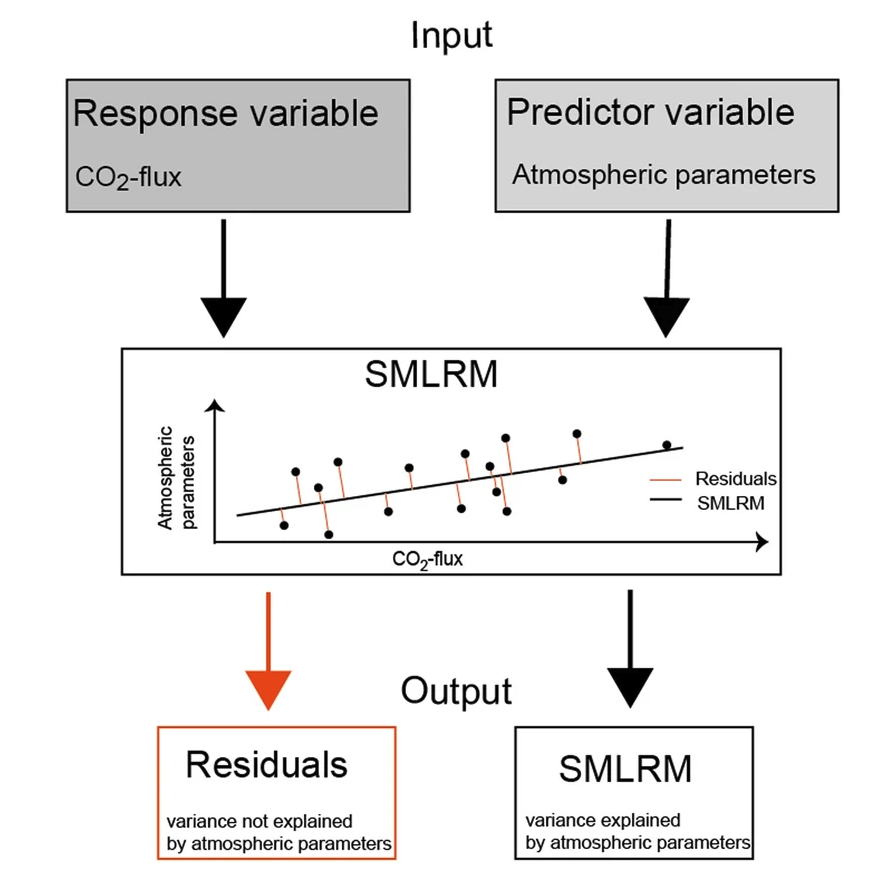
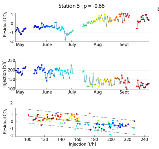

Carbon dioxide is the most abundant, non-condensable gas in volcanic systems, released into the atmosphere through either difuse or advective fuid fow. The emission of substantial amounts of CO2 at Earth’s surface is not only controlled by volcanic plumes during periods of eruptive activity or fumaroles, but also by soil degassing along permeable structures in the subsurface.
| |
(a) Location of the Los Humeros Volcanic Complex (LHVC) (b) Overview of the main production feld of Los Humeros (Installed capacity 93.9 MWe21). White solid and dashed lines illustrate known and inferred faults, respectively. Orange circles represent locations of seismic events from September 2017 to September 201823. Te inset map, illustrated by the white dashed rectangle, shows the extent of the LHVC and Los Potreros calderas hosting the active geothermal feld. (c) Setup of the CO2 monitoring array within the fault damage zone of the Los Humeros fault. Ts values indicate ground temperatures measured during the initial site selection survey, while black arrows show the direction and extension of fault geometry parameters (Jentsch et al. 2022).
|  |
Fig.2A simplifed conceptual model showing enhanced fuid migration along steeply-dipping faults/ fault damage zones cutting through the Los Humeros geothermal system. Cross sections show the orientation and connectivity of injection wells to faults. Red arrows illustrate the migration of hot reservoir fuids, while blue arrows show the migration of colder reinjected fuids (Jentsch et al. 2022). |
Fig.3We used a stepwise multiregression analyis to eliminate atmospheric paramters of the measured soil gas emission rates. We then used the residuals representing the variabillity of the time series not affected by atmopheric changes (Jenbtsch et al. 2022). |
 |
Fig.4The results show an inverse correlation between the reinjection of geothermal fluids and CO2 soil gas emissions within a time window of ≤ 24 h (Jentsch et al. 2022). |
 |